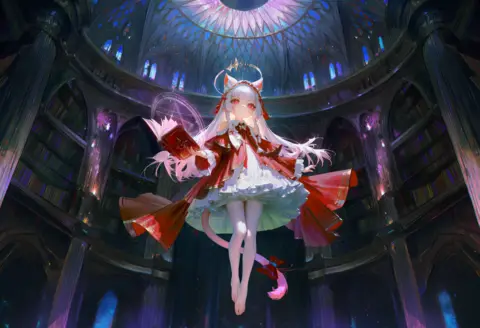

方案 A+B《从文字到世界》：分场脚本（第 1 轮）
这版脚本往下做吗？
推荐照这版出分镜，并先拿第 3 场“字化成星”做原型：全页的成败系在这一个转场上。
| 梗概 | 白天，你在稿纸上写下一行字；黄昏，字里的人和地方浮起来，变成星；夜里，星连成一个世界，有人替你守着；天亮，世界落回书架，成了一本书。白天讲现在就能用的书房，夜里讲正在长成的世界。 |
|---|---|
| 美术 | 前半是书房（象牙纸、墨、赤红、金线），后半是星海（夜色、金色星光）；底色跟着滚动从白天走到夜里，再走回早晨。 |
| 招牌动作 | 字化成星：一行正文里的人名、地名浮起来，碎成光点，升上夜空。结尾倒过来：星光落下，聚成一本书。 |
| 星璃 | 只在夜里出现一次（第 5 场），在书庭的一扇圆窗里。 |
| 小猫 | 白天在页边，夜里在导航里，天亮时在书后睡着。 |
| 现状与愿景 | 白天全是现在能用的；夜里先讲已经能用的世界（条目、按章节的状态、来历），再讲在做的伏笔，在做的标出来。 |
| 篇幅 | 约 11 屏。 |
分场
第 1 场 · 白天，一行字 · 1 屏
从文字，到世界。
本地的长篇写作工作区，替你记住笔下的世界。
- 得到
- 产品是什么，整页要讲什么。
- 画面
- 象牙稿纸；编辑器里一行正文正在打出：“雪落进山门的时候，陈砚还是个双臂健全的散修。”页边书后的小猫专注地看；主按钮“下载桌面版”。
- 动
- 载入时逐字打出；往下滚时，“陈砚”“山门”两个词由墨色转成金色。
- 依据
- 现在能用本地 Markdown 与编辑器。
第 2 场 · 一张够大的书桌 · 2 屏 · 钉住
一张够大的书桌。
章节、设定、批注和对话都在一个窗口里；作品是你电脑里的一个文件夹。
- 得到
- 今天就能用的工作区里有什么。
- 画面
- 产品工作台的真截图（亮色）平放在桌面上；一圈暖光像台灯一样，依次照亮资源管理器、正文与页边批注、右栏的对话。
- 动
- 画面钉住，暖光随滚动挪到下一处，每处配一行小字。
- 依据
- 现在能用工作台、资源管理器、Markdown 编辑器与批注、Agent 对话、插件。
第 3 场 · 黄昏，字浮起来 · 2 屏 · 招牌一幕
字里的人，开始有了自己的样子。
人物、地方、物件，各有一页条目。
- 得到
- 你写下的名字不只是字，它们会成为一个世界。
- 画面
- 底色从象牙暗成夜色；金色的“陈砚”“山门”“照夜剑”从纸面浮起，碎成光点，升上夜空。
- 动
- 跟手：字形碎成光点、上升；往回滚，光点落回纸面拼成字。
- 依据
- 现在能用世界引擎的条目。
第 4 场 · 夜里，星座 · 3 屏 · 钉住，分两步
第一步
第 12 章断的手臂，第 88 章不会自己长回来。
每个人在每一章的样子都记在条目里，点一下就看得到出处。
第二步 · 在做
第 3 章挂上的枪，第 200 章要响。
伏笔连成星座：埋下、推进、兑现；还欠着的那一段，是虚线。
- 得到
- 这个世界记得每一章；伏笔从埋下一路连到兑现。
- 画面
- 光点连成星座，底部一条章节刻度。第一步：陈砚的星座里，“左臂”那颗星到第 12 章暗下去，到第 74 章换成一颗冷蓝的星（寒铁义肢）。第二步：一条金线从第 3 章的星伸向第 200 章的星，还没写到的那一段是虚线。
- 动
- 画面钉住，章节刻度跟着滚动推进，星座随之变化；往回滚倒放。
- 依据
- 现在能用条目、按章节的状态、来历。在做伏笔（剧情插件已有内核，作者界面在做）。
第 5 场 · 守夜的人 · 2 屏
替你守着这个世界的，是星璃。
问她第七章的怀表给了谁，她翻得到；要改稿，她先交计划，你点头才动。
- 得到
- 有一位搭档替你守着这个世界：查、记、陪你想，不替你写。
- 画面
- 星海深处一扇圆窗，窗里是书庭；星璃的半身，歪着头；窗边一段对话气泡（暗色）。
- 动
- 圆窗随滚动从远处靠近；星璃从低头看书到抬眼。
- 依据
- 现在能用星璃是常驻的搭档；Agent 的讨论与计划模式。

第 6 场 · 天亮，一本书 · 2 屏
天亮时，它是一本书。
稿子一直是你电脑里的 Markdown 文件，拷走就能带走。
- 得到
- 世界最后落成一本书；作品是你自己的文件。
- 画面
- 夜空的星光汇成一道，落下来聚成一本赤红封面的书，立上书架（产品书架的真截图）；底色回到象牙。
- 动
- 第 3 场的倒放：光点聚成书；颜色从夜走回早晨。
- 依据
- 现在能用书架、本地文件。
第 7 场 · 开始 · 1 屏
从第一行开始。
0.17 预览版 · Windows · macOS（Apple 芯片）
- 得到
- 现在就能装；还在做的写在这里。
- 画面
- 白天的书桌，书后的小猫睡着了。下载按钮下一行：“还在做的：伏笔账本、谁知道什么、让搭档直接整理设定、写完以后的检查。”再下面是 GitHub、Discord、QQ 群。
- 动
- 鼠标移到下载按钮上，小猫醒过来。
- 依据
- 现在能用Windows 安装版与便携版、macOS 预览版、npm 安装。
长处、风险与素材
| 长处 | 把品牌那句 From words, worlds. 直接演出来；书房与星海各有分工，现状和愿景的界线跟着昼夜走，自然清楚；全页只有一个高潮。 |
|---|---|
| 风险 | 成败系在“字化成星”和“星化成书”两次转场上，光点做粗了就廉价，要着色器或 canvas 的功夫；两种美术要在黄昏那一段接上；页面比方案 A 重，手机要降级。 |
| 素材 | 光点（从字形采样）、星座与章节刻度（代码画）、书庭裁图与星璃半身、亮暗两种配色的产品截图、小猫的心情。 |
首屏第一句用哪一句？
推荐 c1：就是品牌那句 From words, worlds.，一句说完整页的走向。
c1
从文字，到世界。
c2
写下一行字，长出一个世界。
更像一句话，也更口语。
c3
你写下的名字，会成为一个世界。
落在“你”身上，但和第 3 场的意思重了。
哪一场要改，怎么改？
已定
- 重写的是文档站首页 blog.notnotype.com/neuro-book/official/（t01 第 1 条）
- 书房与星海书庭分开各试一版，连起来的“从文字到世界”也试一版（2026-11-26）
- 要高级感；整页讲一个故事，用滚动叙事（t01 第 3 条）